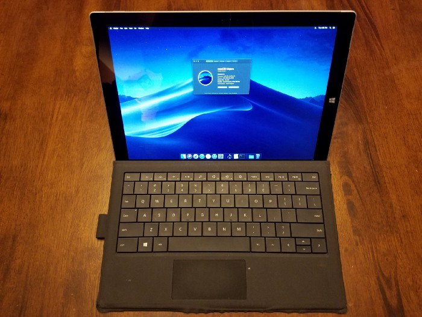
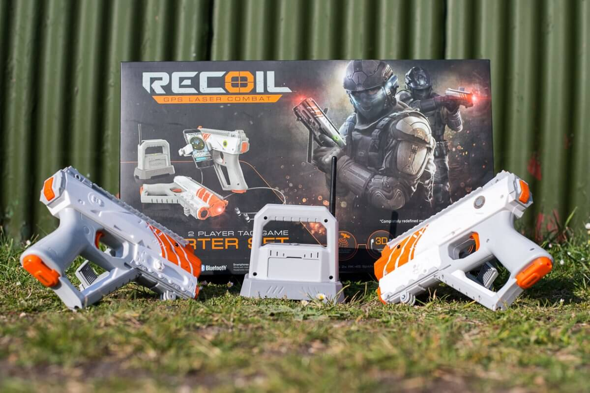

Projects

Surface Pro 3 Hackintosh
 With this project my goal was to create a hackintosh with my surface pro 3 and write a post explaining how to recreate it. This was a partial success; I got MacOS Mojave running on the device and started writing the guide, of which an unfinished copy is linked below. Unfortunately due to multiple factors, including the computer I was writing it on dying, it remains unfinished.
Recoil Hacking
 Recoil is an augmented reality laser tag game by Skyrocket Toys. A few years back, they released an older copy of the source code for the firmware on the game hub. The game hub is just a router running a small game server to link the guns together. About a year ago I sought to build the copy of openWRT found on the game hub for another router I had. This proved more difficult then expected, as this build was so old that I had to compile it on Ubuntu 16. I discovered upon installing the build that it functioned the same as a normal game hub.